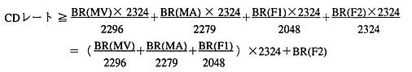

This means the maximum sum of bit rates that can be described in
Therefore, the following conversion is required between the bit rate defined by the
The MPEG video bit rate is BR (MV), the MPEG audio is BR (MA), the data (FORM1) bit rate is BR (F1), and the data (FORM2) is BR (F2). 
When the disc format conforms to CD-ROM XA, the data length per sector that can be used in MPEG multiplex varies depending on the data type and is as follows.
It becomes the relationship.
This relationship must always hold in multiplex, it is checked at runtime, and an error occurs if it violates.
Up to 10 streams can be MPEG multiplexed.